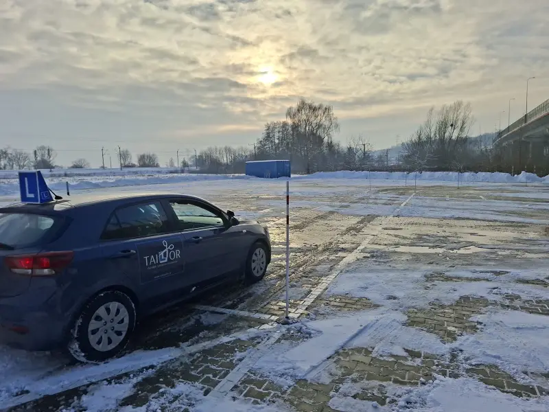
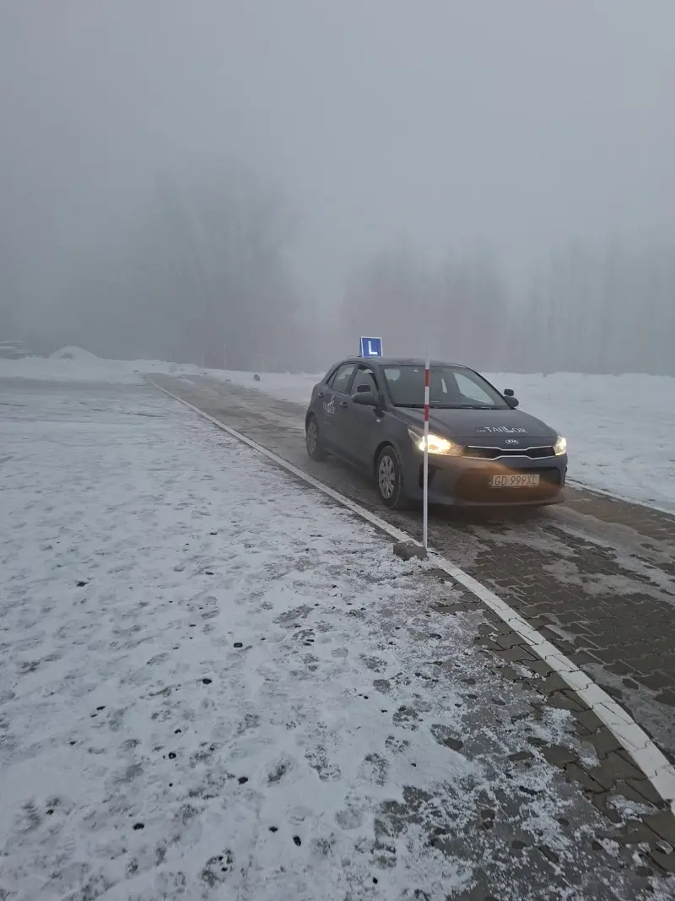
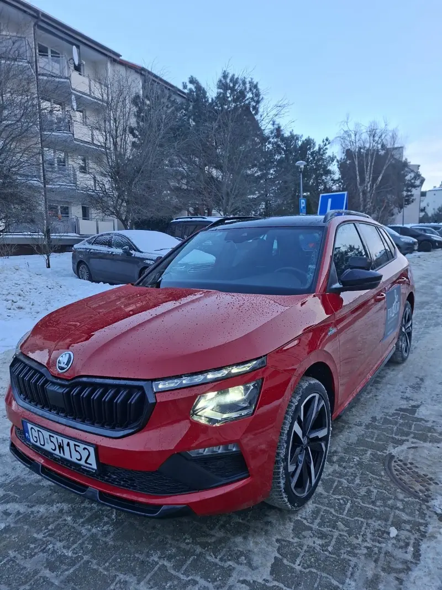
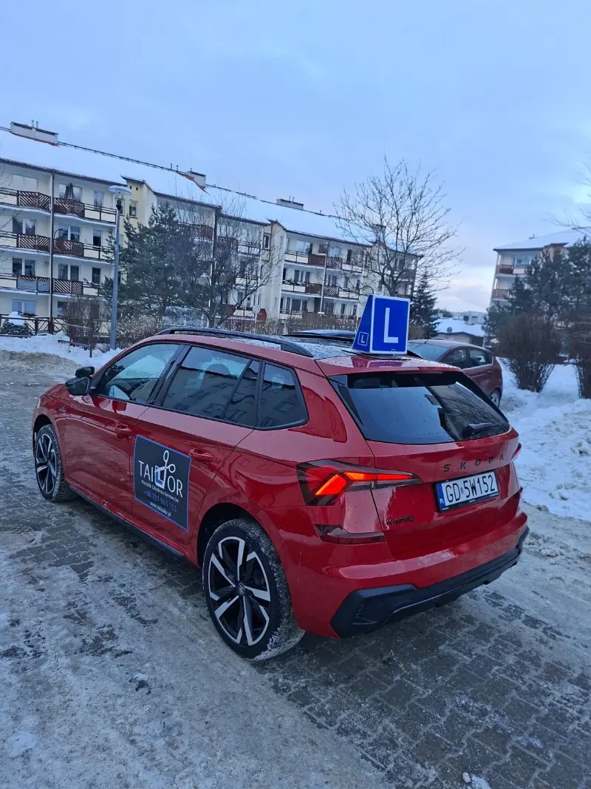
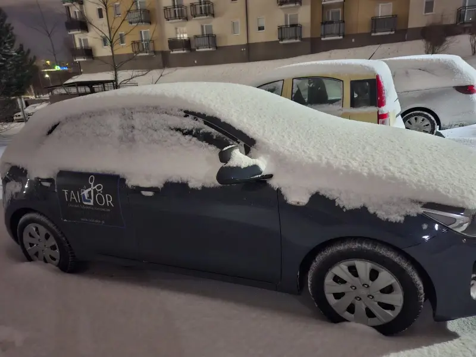
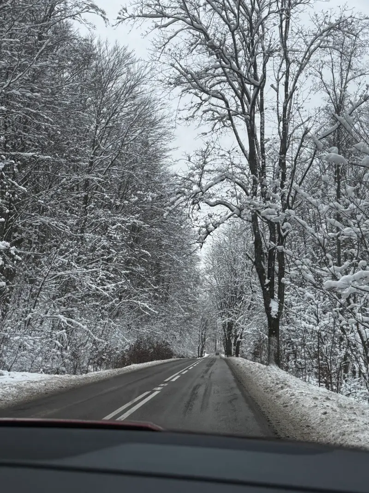
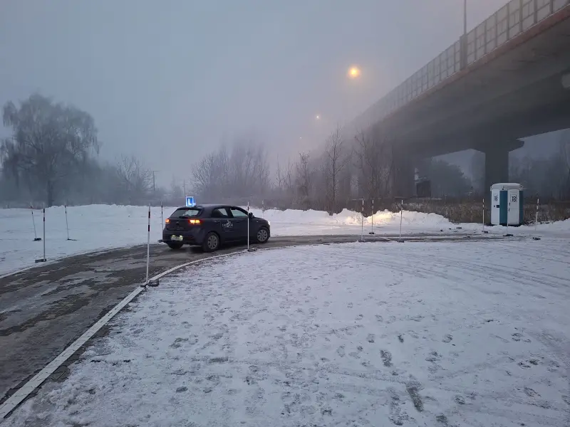

Bezpieczna jazda zimą: jak jeździć samochodem po śniegu i lodzie w Gdańsku?

W skrócie: zimą jedź wolniej, niż pozwala znak, hamuj wcześniej i płynnie, ruszaj delikatnie i zostawiaj kilka sekund odstępu zamiast dwóch. Z ABS-em w awaryjnej sytuacji mocno wciśnij hamulec i trzymaj, nie pompuj. Przed jazdą odśnież całe auto. Opony zimowe w Polsce nie są obowiązkowe, ale na śniegu i lodzie robią ogromną różnicę.
Bezpieczna jazda zimą wymaga odpowiedniego przygotowania samochodu, przewidywania zagrożeń i dostosowania prędkości do warunków drogowych. Śnieg, lód i błoto pośniegowe sprawiają, że hamowanie, ruszanie i pokonywanie zakrętów stają się trudniejsze, szczególnie dla początkujących kierowców.
W OSK Tailor, szkole nauki jazdy w Gdańsku, wiemy, że dobry kierowca to nie tylko osoba przygotowana do zdania egzaminu. To przede wszystkim ktoś, kto potrafi przewidywać zagrożenia i podejmować rozsądne decyzje na drodze. Dlatego przygotowaliśmy praktyczny poradnik dla początkujących kierowców i kursantów prawa jazdy kat. B.
1. Dlaczego jazda zimą jest trudniejsza niż latem?
Największym wyzwaniem zimą jest ograniczona przyczepność opon do nawierzchni. Na suchej drodze samochód zwykle reaguje przewidywalnie na hamowanie, przyspieszanie i skręcanie. Gdy pojawia się śnieg, lód lub błoto pośniegowe, sytuacja może zmienić się diametralnie: auto potrzebuje więcej miejsca do zatrzymania, a zbyt szybko pokonany zakręt może skończyć się utratą przyczepności.
Zimą szczególnie uważaj na:
- oblodzone skrzyżowania i przejścia dla pieszych,
- mosty i wiadukty, na których nawierzchnia może szybciej zamarzać,
- koleiny wypełnione wodą lub błotem pośniegowym,
- zacienione odcinki jezdni,
- miejsca, w których często hamują autobusy i samochody,
- ograniczoną widoczność podczas opadów śniegu i po zmroku.

Ważna zasada: zimą nie wystarczy jechać zgodnie z ograniczeniem prędkości. Trzeba jechać z prędkością bezpieczną w aktualnych warunkach.
2. Jak prawidłowo hamować samochodem na śniegu i lodzie?
Jedno z najczęstszych pytań początkujących kierowców brzmi: jak hamować zimą, żeby nie wpaść w poślizg? Odpowiedź zaczyna się od przewidywania.
Zacznij hamowanie odpowiednio wcześnie
Na śliskiej nawierzchni droga hamowania może być wielokrotnie dłuższa niż na suchej. Jej długość zależy m.in. od prędkości, stanu opon i przyczepności. Gdy widzisz czerwone światło, skrzyżowanie albo zwalniające auto przed sobą, zacznij wytracać prędkość wcześniej. Nie czekaj do ostatniej chwili.
Hamuj płynnie, a w sytuacji awaryjnej zdecydowanie
Przy zwykłym zwalnianiu naciskaj pedał hamulca możliwie płynnie. Jeśli jednak pojawi się nagłe zagrożenie, a samochód ma sprawny ABS, mocno naciśnij i przytrzymaj pedał hamulca. Nie pompuj go. ABS pomaga zachować możliwość kierowania autem podczas mocnego hamowania, ale nie gwarantuje krótkiej drogi zatrzymania na śliskiej nawierzchni.
Nie skręcaj gwałtownie podczas hamowania
Jednoczesne mocne hamowanie i ostry skręt mogą przekroczyć przyczepność opon. Najbezpieczniej planować manewry wcześnie i wytracać prędkość jeszcze przed zakrętem.
3. Jak ruszać samochodem na śliskiej nawierzchni?
Ruszanie na śniegu bywa trudne zwłaszcza podczas pierwszych zimowych jazd. Gdy koła obracają się zbyt szybko, tracą przyczepność i samochód zamiast ruszyć, zaczyna buksować.
Ruszanie samochodem z manualną skrzynią biegów
- Dodawaj gaz delikatnie.
- Płynnie operuj sprzęgłem i nie puszczaj pedału gwałtownie.
- Gdy koła zaczynają buksować, ogranicz gaz zamiast mocniej wciskać pedał przyspieszenia.
W niektórych samochodach pomaga ruszanie z drugiego biegu, jeśli dopuszcza to instrukcja pojazdu i pozwalają na to warunki. Nie jest to jednak uniwersalne rozwiązanie dla każdego auta.
Jak ruszać zimą samochodem z automatem?
W aucie z automatyczną skrzynią biegów nie obsługujesz sprzęgła, ale nadal bardzo ważne jest delikatne operowanie pedałem przyspieszenia. Niektóre samochody mają też tryb zimowy, który ogranicza buksowanie kół przy ruszaniu.
W OSK Tailor uczymy jazdy na manualu, na Kii Rio 4, i na automacie, na Skodzie Kamiq.


4. Co zrobić, gdy samochód wpadnie w poślizg?
Poślizg to jedna z sytuacji, których początkujący kierowcy boją się najbardziej. Najważniejsze jest ograniczanie ryzyka: dostosowana prędkość, płynna jazda i unikanie nagłego hamowania oraz skręcania. Jeśli jednak dojdzie do utraty przyczepności:
- wykonuj możliwie spokojne ruchy kierownicą,
- patrz w kierunku, w którym chcesz bezpiecznie jechać,
- nie dodawaj gwałtownie gazu,
- unikaj przypadkowych, nerwowych ruchów,
- dostosuj reakcję do rodzaju poślizgu i sytuacji na drodze.
Uwaga: nie ma jednej techniki wychodzenia z każdego poślizgu. Inaczej reaguje się przy poślizgu przedniej osi, inaczej tylnej, a jeszcze inaczej przy hamowaniu awaryjnym. Takich umiejętności najlepiej uczyć się pod okiem specjalisty, na zamkniętym i bezpiecznym obiekcie, a nie eksperymentować na drodze publicznej.
5. Jaki odstęp zachować między samochodami zimą?
Zimą większy odstęp to więcej czasu na zauważenie zagrożenia i rozpoczęcie hamowania. Na suchej nawierzchni prostym punktem odniesienia jest co najmniej dwusekundowy odstęp. Zimą to często za mało: na śliskiej drodze zwiększ go do kilku sekund, a w bardzo trudnych warunkach jeszcze bardziej.
Jak sprawdzić odstęp?
- Wybierz nieruchomy punkt przy drodze, np. latarnię.
- Gdy auto przed Tobą go minie, zacznij liczyć sekundy.
- Skończ liczyć, gdy Twój samochód dotrze do tego samego punktu. Jeśli wyszło za mało, łagodnie zwolnij.
Nawet duży odstęp nie zastąpi dostosowania prędkości do warunków. Więcej o odległościach, które warto znać, przeczytasz we wpisie Odległości w Kodeksie drogowym.
6. Jak przygotować samochód do jazdy zimą?

Bezpieczna jazda zaczyna się jeszcze przed uruchomieniem silnika. Przed wyjazdem sprawdź:
- Opony: czy nadają się na zimę, mają właściwe ciśnienie i dobry bieżnik.
- Szyby i lusterka: usuń z nich śnieg, szron i lód.
- Reflektory: muszą być czyste i sprawne.
- Wycieraczki: powinny skutecznie czyścić szybę.
- Płyn do spryskiwaczy: zimowy, odporny na temperatury poniżej zera.
- Akumulator: zadbaj o jego sprawność, zwłaszcza przed większymi mrozami.
- Dach i karoserię: usuń śnieg, który mógłby zasłonić widok albo spaść na inne auta.
Czy opony zimowe są obowiązkowe w Polsce?
Nie. W Polsce nie ma ogólnego obowiązku sezonowej wymiany opon na zimowe. Nie znaczy to jednak, że jazda na letnich oponach w zimowych warunkach to dobry pomysł. Opony zimowe albo dobre opony całoroczne, dobrane do auta i warunków, wyraźnie poprawiają bezpieczeństwo w niskiej temperaturze, szczególnie na śniegu i błocie pośniegowym.
Jako orientacyjny moment na zmianę opon często przyjmuje się temperaturę około 7°C. To jednak ani sztywna granica techniczna, ani wymóg prawny.
7. Zimowa jazda po Gdańsku: na co uważać?
W Gdańsku podczas jednej podróży możesz przejechać przez ruchliwe centrum, wjechać na wzniesienie i trafić na spokojną osiedlową ulicę, gdzie nawierzchnia bywa bardziej śliska.
Wzniesienia w Gdańsku
Na Chełmie, Morenie czy Siedlcach szczególnie ostrożnie ruszaj pod górę i zjeżdżaj ze wzniesień. Przed podjazdem oceń sytuację, wybierz odpowiednią prędkość i, jeśli możesz to zrobić bezpiecznie i zgodnie z przepisami, nie zatrzymuj się w trudnym miejscu. Na zjeździe nie rozpędzaj auta nadmiernie i nie jedź na luzie.
Skrzyżowania i przejścia dla pieszych
W centrum Gdańska, we Wrzeszczu i na ruchliwych ulicach najważniejsza jest obserwacja. Zimą pieszy bywa gorzej widoczny, a samochód potrzebuje więcej czasu i miejsca, żeby się zatrzymać. Zbliżając się do przejścia, wcześniej oceń sytuację i zwolnij. Kiedy przepisy wymagają szczególnej ostrożności, zimą ma to jeszcze większe znaczenie.
Mosty, wiadukty i zacienione ulice
Na niektórych mostach i w zacienionych miejscach lód utrzymuje się nawet wtedy, gdy reszta drogi wygląda dobrze. Brak widocznego śniegu nie oznacza, że asfalt jest bezpieczny.

8. Czy warto zacząć kurs prawa jazdy zimą?
Tak, rozpoczęcie kursu prawa jazdy zimą może być dobrym pomysłem. Nauka w trudniejszych warunkach, o ile pozwalają one bezpiecznie prowadzić zajęcia, to okazja, żeby pod okiem instruktora poznać sytuacje, które później spotkasz sam. Zimą kursant uczy się:
- delikatnego operowania pedałami,
- wcześniejszego przewidywania zagrożeń,
- właściwego zachowania na śliskiej nawierzchni,
- planowania hamowania i zatrzymywania,
- dostosowywania prędkości do pogody,
- odpowiedzialnego podejmowania decyzji.
Zimowa jazda nie jest jednak okazją do ćwiczenia niebezpiecznych manewrów w normalnym ruchu. Dobry kurs przygotowuje do codziennej jazdy, nie tylko do egzaminu.
9. Jak przygotować się do egzaminu praktycznego zimą w PORD Gdańsk?
Jeśli Twój egzamin wypada zimą, nie zakładaj z góry, że pogoda przekreśla Twoje szanse. Pamiętaj jednak o kilku rzeczach:
- sprawdzaj prognozę i aktualne warunki na drogach,
- wyśpij się i zaplanuj dojazd do PORD bez pośpiechu,
- na egzaminie skup się na obserwacji drogi, płynności, właściwej prędkości i bezpiecznym wykonywaniu poleceń egzaminatora.
Jeśli warunki są niebezpieczne, o przebiegu egzaminu decyduje ośrodek i egzaminator, zgodnie z obowiązującymi zasadami. Więcej o samym egzaminie przeczytasz we wpisie egzamin praktyczny w PORD Gdańsk.

W OSK Tailor przygotowujemy kursantów do egzaminu w PORD Gdańsk na takich samych autach jak egzaminacyjne: na manualu uczymy na Kii Rio 4, a na automacie na Skodzie Kamiq.
10. Najczęstsze błędy początkujących kierowców zimą
- Zbyt szybka jazda: ograniczenie prędkości to nie gwarancja bezpieczeństwa.
- Hamowanie w ostatniej chwili: zimą trzeba przewidywać dużo wcześniej.
- Zbyt mały odstęp: śliska nawierzchnia nie wybacza jazdy na zderzaku.
- Gwałtowne przyspieszanie i skręcanie: płynność to podstawa bezpiecznej jazdy.
- Jazda z nieoczyszczonymi szybami: słaba widoczność utrudnia dostrzeżenie pieszych i innych zagrożeń.
Najważniejsza lekcja? Nie trzeba jeździć szybko, żeby być dobrym kierowcą. Trzeba jeździć odpowiedzialnie.
Najczęstsze pytania o jazdę zimą (FAQ)
Czy zimą trudniej nauczyć się jeździć samochodem?
Zimowe warunki wymagają większej ostrożności, ale nauka pod opieką instruktora pozwala stopniowo budować umiejętności i pewność za kierownicą. Zajęcia zawsze dostosowujemy do aktualnego stanu dróg.
Jak hamować na lodzie samochodem z ABS?
W razie hamowania awaryjnego mocno naciśnij pedał hamulca i utrzymuj nacisk, jednocześnie kierując samochodem w bezpieczną stronę, jeśli warunki na to pozwalają. Nie pompuj hamulca. ABS nie eliminuje ryzyka poślizgu i nie gwarantuje krótkiej drogi hamowania.
Czy samochodem z automatem łatwiej jeździć zimą?
Automatyczna skrzynia biegów zdejmuje z kierowcy zmianę biegów i obsługę sprzęgła, więc początkujący może bardziej skupić się na drodze. Nie zastępuje jednak ostrożności ani dobrych opon.
Czy można zdawać prawo jazdy zimą w Gdańsku?
Tak. Egzaminy praktyczne w PORD Gdańsk odbywają się także zimą, jeśli warunki pozwalają przeprowadzić je bezpiecznie. Przy trudnej pogodzie warto sprawdzać aktualne komunikaty PORD Gdańsk.
Czy w Polsce trzeba mieć opony zimowe?
Nie. W Polsce nie ma ogólnego obowiązku sezonowej wymiany opon na zimowe. Dobór ogumienia do temperatury i warunków na drodze jest jednak bardzo ważny dla bezpieczeństwa.
Co zrobić, gdy samochód zaczyna się ślizgać?
Unikaj gwałtownych, nerwowych ruchów, patrz tam, gdzie chcesz bezpiecznie jechać, i reaguj odpowiednio do rodzaju poślizgu. Właściwa reakcja zależy od sytuacji, dlatego warto ćwiczyć ją na specjalistycznym szkoleniu na zamkniętym placu.
Gdzie w Gdańsku można zacząć naukę jazdy zimą?
Na przykład w OSK Tailor: rodzinnej szkole jazdy kat. B w centrum Gdańska (biuro w Zieleniaku, 5 minut od Dworca Głównego). Uczymy na manualu (Kia Rio 4) i automacie (Skoda Kamiq), prowadzimy też jazdy doszkalające. Zapisy trwają przez cały rok.
Podsumowanie: bezpieczna jazda zimą zaczyna się od dobrych nawyków
Zima potrafi zaskoczyć nawet doświadczonych kierowców. Przewidywanie zagrożeń, delikatne operowanie pedałami, większy odstęp i prędkość dopasowana do warunków są dużo ważniejsze niż pośpiech.
W OSK Tailor w Gdańsku uczymy nie tylko tego, jak zdać egzamin, ale też jak budować bezpieczne nawyki za kierownicą. Prowadzimy kursy prawa jazdy kat. B na Kii Rio 4 i na Skodzie Kamiq z automatyczną skrzynią biegów, a także jazdy doszkalające. Sprawdź cennik albo zadzwoń: 725 563 155.
Przeczytaj też: Włącz myślenie, nim opadną szlabany, czyli zasady na przejazdach kolejowych.